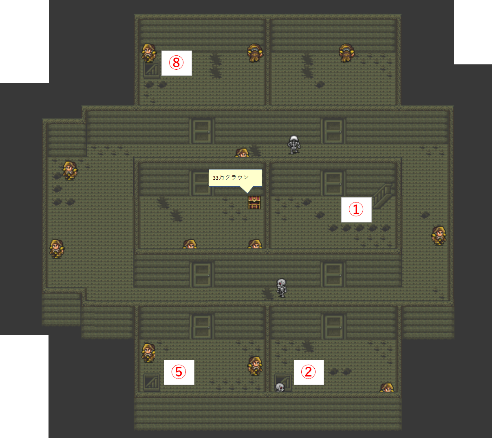

沈没船のマップ
ホーム > ロマサガ２ > ロマサガ2の地図 > 南ロンギット海 > 沈没船
沈没船
沈没船は南ロンギット海の以下地図の場所にあります
入手アイテム
- 33万クラウン（地下1階の宝箱）
- 青水晶の槍（地下2階①小部屋4の宝箱）
- 超銅金の鎧（地下2階②小部屋5’の宝箱）
沈没船入口
地下1階

→②から地下2階①小部屋1へ
→⑧から地下2階②小部屋1へ
地下2階①小部屋1
地下2階①
→④から地下2階①小部屋2へ
→⑥から地下2階①小部屋3へ
→⑦から地下2階①小部屋4へ
地下2階①小部屋2
④から入って③に出る。
→⑤から地下1階へ
地下2階①小部屋3
地下2階①小部屋4
地下2階②小部屋1
地下2階②
→⑩から地下2階②小部屋2へ
→⑫から地下2階②小部屋3へ
→⑭から地下2階②小部屋4へ
→⑯から沈没船入口へ
地下2階②小部屋2
地下2階②小部屋3
地下2階②小部屋4
地下2階②小部屋5
カウンターの店主に話しかけると下の「地下2階②小部屋5’」に変化します。
地下2階②小部屋5’

地下2階③